第14天：控制流图
第14天：控制流图
细心的读者一定发现了，我们生成的中间代码有大量冗余。例如下面的代码：
1 | |
生成的中间代码是：
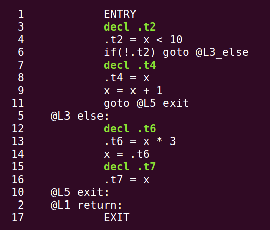
比如指令 8， .t4 = x; 就是多余的；指令 16 ，.t7 = x;也是多余的。
如何去掉这些多余的代码？或者说如何让中间代码变得高效，是我们要解决的问题。
上图的中间指令乍一看是线性的，但是如果从跳转关系入手，它可以表示成图的形式，例如下图：
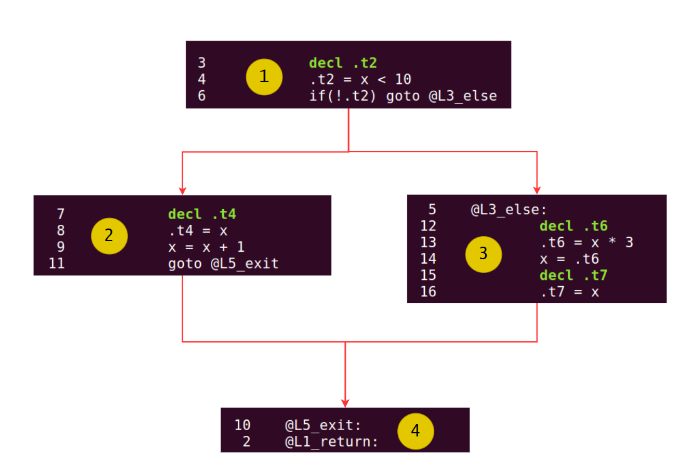
指令 6 是一个条件跳转，如果 t2 的值为 0，则跳转到图中 3 指示的代码块；否则执行 2 指示的代码块。
上面的图有个名字，叫“流图”。
流图（Flow Graph）是编译原理中用于表示程序控制流的一种有向图，也称为控制流图（Control Flow Graph, CFG）。它将程序的基本块作为节点，控制流转移作为边，为程序分析和优化提供了重要的数据结构基础。
通俗讲，为了表示程序运行中会可能会遍历到的所有路径，以及路径中基本块之间的跳转及执行关系，我们用流图来抽象表达代码执行的顺序。基于控制流图，我们可以分析程序内部数据是怎么流动的，并且基于流图优化代码。
基本块是构成流图的关键要素。什么是基本块？
一个基本块是一个最大的、连续的指令序列，它满足以下两个条件：
- 控制流只能从该序列的第一条语句（称为“入口语句”）进入
- 控制流只能从该序列的最后一条语句离开。除了最后一条语句，块内的其他语句都不能是跳转语句。
由此可见，基本块的特点是：单一入口，单一出口；一旦开始执行基本块中的第一条语句，就一定会顺序执行完整个块。
本文开头的中间代码，不考虑开头的 ENTRY 和结尾的 EXIT，按照上述规则可以划分为 4 个基本块，如下图所示。
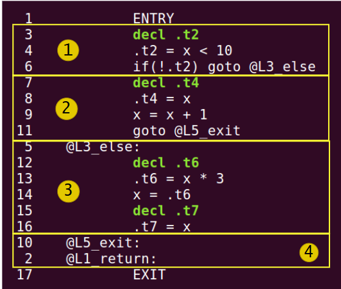
为什么这样划分呢？
我们先看指令 3 : decl .t2 ，从它开始连续往下，到 6，就是条件跳转了，因为只能在最后一条指令跳转（包括条件跳转），所以 6 就是这个基本块的最后一条指令。
从指令 7 开始是一个新的基本块，同理，到 11 结束此基本块。
指令 5 到指令 16 是第三个基本块。为什么不包括指令 10 呢？
前文说“控制流只能从该序列的第一条语句进入”，因为基本块 2 的指令 11 往指令 10 跳转，所以指令 10 必须是第一条指令，所以基本块 3 不能包括指令 10；
最后，指令 10 和指令 2 构成最后一个基本块。
边代表了基本块之间可能的控制流转移路径，见前文流图中的红色箭头。
边可以分成下面几类。如果满足以下条件之一，则存在一条从基本块 A 到基本块 B 的边。
| 类型 | 条件 | 示例 |
|---|---|---|
| 顺序边 | 基本块 A 最后一条指令是非跳转指令，下一个基本块是 B | 基本块 3 到基本块 4 存在一条边 |
| 条件跳转边 | 块 A 最后一条指令是条件跳转，条件为真则跳转到 B | 基本块 1 到基本块 3 存在一条边 |
| 无条件跳转边 | 块 A 最后一句是无条件跳转，跳转到 B | 基本块 2 到基本块 4 存在一条边 |
| fall-through 边 | 块 A 最后一句是条件跳转，当条件不成立时，继续执行下一基本块 B | 基本块 1 到基本块 2 存在一条边 |
接下来我们要用代码实现“把中间指令序列划分为基本块”。如何做呢？
第一步，要标记“首指令”。如果我们找到了每个块的第一条指令，那问题就简单了，因为每个首指令对应的基本块包括了从它自己开始直到下一个首指令（不含）或结束指令之间的所有指令。
选择首指令的规则如下：
1、中间代码的第一条指令是首指令
2、任意一个条件转移或无条件转移指令的目标指令是一个首指令
3、紧跟在一个条件转移或无条件转移指令之后的指令是一个首指令
另外，在编译原理教材中，通常会增加两个分别称为“入口”和“出口”的节点。它们不和任何可执行的中间指令对应。这样做的原因是原始代码可能有多个入口或多个出口，添加统一的“入口”和“出口”节点后，所有分析算法都可以从一个固定起点开始，到一个固定终点结束，达到简化逻辑的效果。
注意，划分基本块是针对一个函数的中间代码而言的，之前我们已经生成了函数的入口和出口指令，所以就不用特意添加入口和出口了。
标记首指令
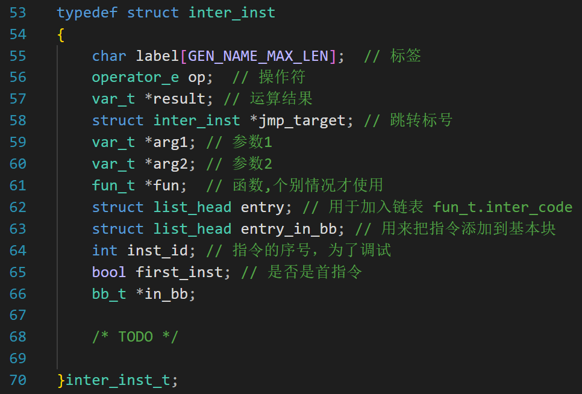
inter_inst_t 结构体有几个字段要注意。第 63 行， 定义了 entry_in_bb，这个是链表节点的名字，和 62 行的链表节点功能一样，都是用于加入某个链表。
只不过 62 行的 entry 用于加入函数的中间指令链表，entry_in_bb 用于加入基本块的指令链表。基本块的结构体定义(bb_t)后面会说。
第 65 行，如果这个指令被标记为首指令，那么这个字段为 true，否则为 false(这是默认值)；
第 66 行，这是一个指向 bb_t 类型的指针，用来记录这个指令属于哪一个基本块。
从代码角度讲，满足下面任何 1 个条件就可以标记为首指令：
1、是第一条指令；
2、紧跟（条件）跳转指令之后的指令；
3、（条件）跳转指令的目标指令；
4、 ENTRY 和 EXIT 也是首指令，因为它们都是独立的基本块；
如何判断是不是（条件）跳转指令？
其实不难，就是看中间指令的 op 字段，代码如下。
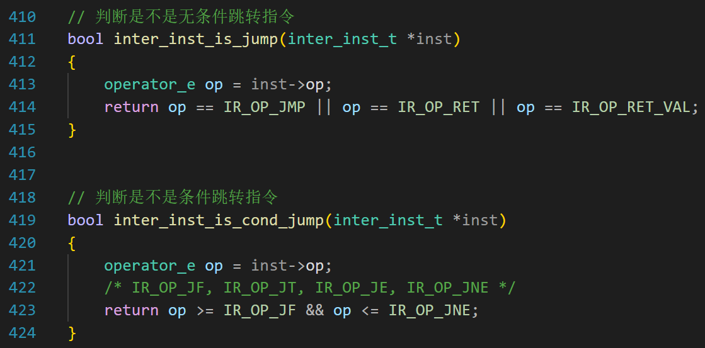
mark_first 函数的作用是标记首指令，它的参数是某个函数的中间指令链表的头节点的地址。
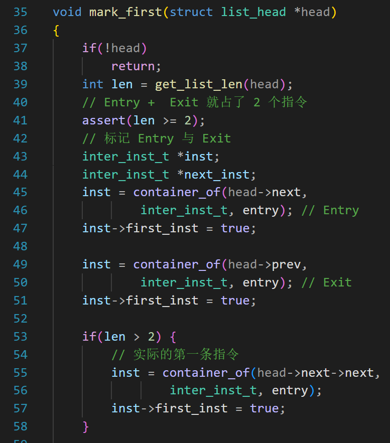
因为我们给每个函数都添加了 ENTRY 和 EXIT 指令，所以链表的长度肯定大于等于 2；
第 45 行，ENTRY 是链表中的第一个节点，所以从 head->next 就可以得到它的地址，第 47 行，把它标记为首指令。
EXIT 是链表中最后一个节点，从 head->prev 得到它的地址，同理，第 51 行标记它为首指令。
第 55 行，head->next->next 代表链表中除去 ENTRY 的第一条指令，它才是真正的第一条指令，也需要标记。
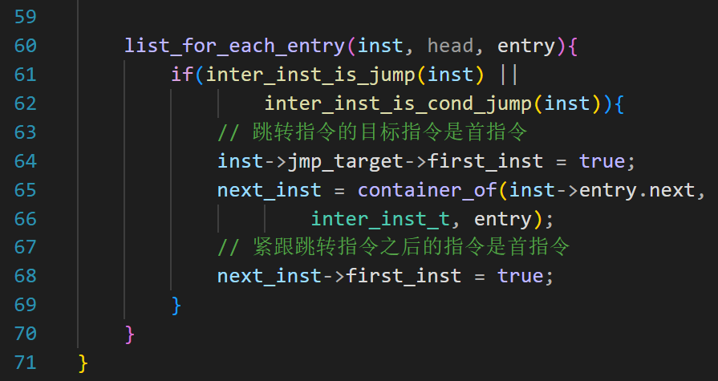
第 60 行，遍历链表，寻找紧跟（条件）跳转指令之后的指令和（条件）跳转指令的目标指令。
第 61~62 行，判断此指令是不是（条件）跳转指令，如果是，它的目标指令是首指令，第 64 行标记目标指令。另外，它的下一条指令也是首指令，第 65 行，从 inst->entry.next 得到它的下一条指令，第 68 行标记下一条指令为首指令。
有读者问，如果这个（条件）跳转指令是链表上的最后一条指令怎么办？其实不存在这种情况，因为链表上最后一条指令是 EXIT，所以这条指令最多是倒数第二条指令，如果这样的话，第 68 行就把 EXIT 又标记了一遍，这并不会产生什么问题。
划分基本块
首指令标记完毕后，就可以划分基本块了。
思路是这样的，先准备一个空的临时链表，然后遍历中间指令序列，如果发现了首指令，就把它加入临时链表；继续遍历，如果不是首指令，也把它加入临时链表，如果又发现了首指令，说明临时链表中的指令可以构成一个基本块，此时创建基本块，把临时链表的指令都转移到基本块中，把刚才发现的首指令加入临时链表，继续遍历。如此操作，直到遍历完毕。这时候，临时链表中的指令构成最后一个基本块。
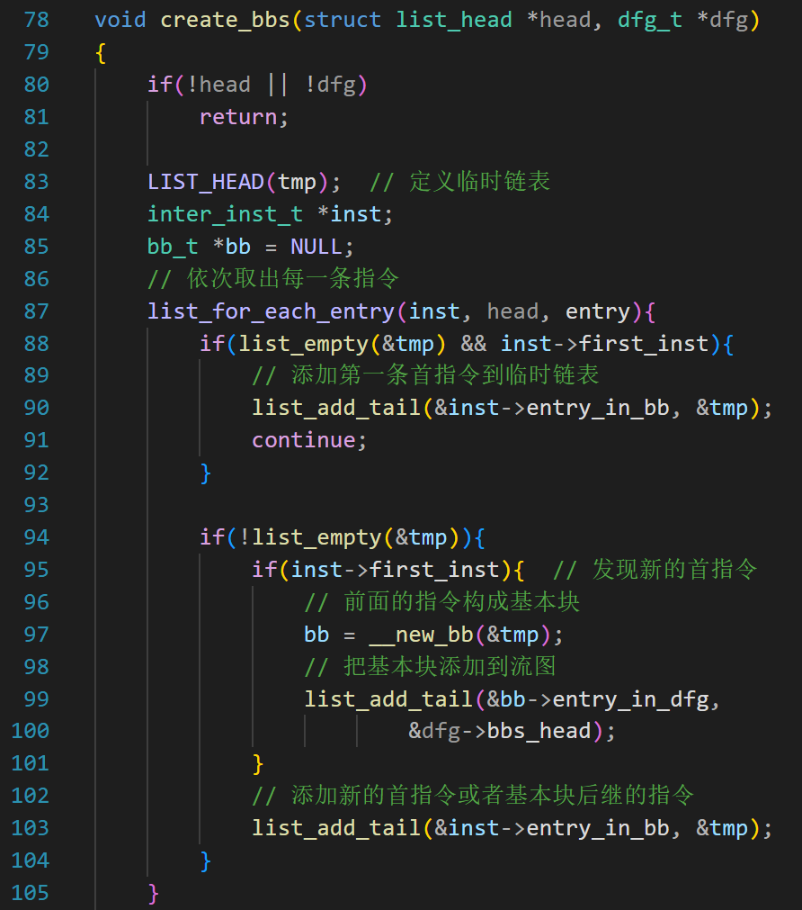
此函数有 2 个参数，第一个是已经标记过首指令的中间指令序列的头节点的地址，第二个参数先不管。
第 83 行，定义临时链表并初始化链表。
第 87 行，遍历中间指令序列的链表。
88~90，如果临时链表为空且发现了首指令，就把这个首指令加入链表，然后用 continue 跳过后面的代码，让 inst 指向下一条指令；
在链表不空的情况下，如果遇到了首指令，就执行第 97 行，创建基本块，把临时链表的指令转移到基本块（这样临时链表就空了），再把遇到的首指令加入临时链表；如果遇到的不是首指令，就直接把它加入临时链表。
有人问如果链表为空，且遇到的不是首指令怎么办？不存在这种情况，因为中间指令序列的第一条指令是 ENTRY，已经标记为首指令，所以刚开始遍历第一条指令（ENTRY）的时候，第 88 行必然为真， ENTRY 指令肯定被加入链表。再往后，要么遇到普通指令，会被追加到链表，要么遇到首指令，创建基本块并清空链表，再把这个首指令加入到链表，所以链表是不会空的。
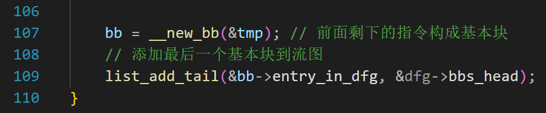
当遍历完毕后，第 107 行，让临时链表中的指令构成最后一个基本块。
下面我们看看基本块的结构体定义：
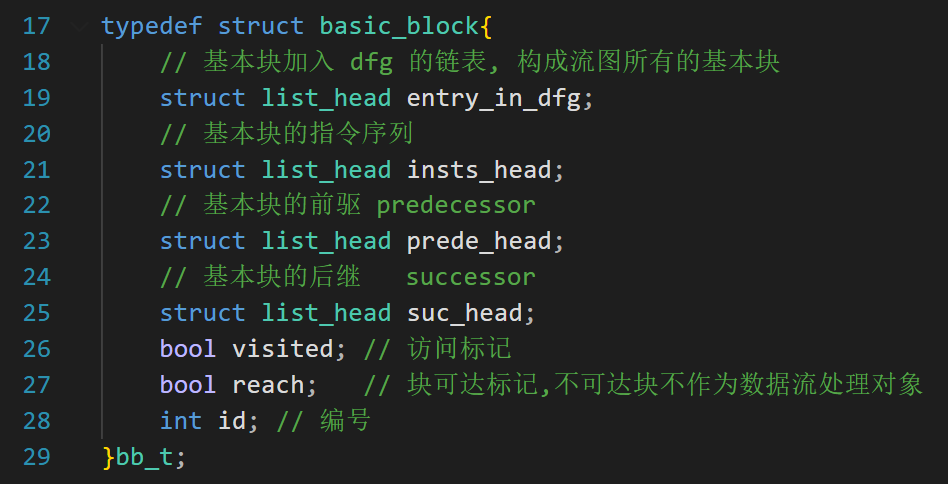
前文说把临时链表中的指令转移到基本块，其实就是转移到第 21 行的 insts_head 链表。
第 23、24 行用来记录此基本块的前驱和后继，后文会详细说明。
第 26~27 牵扯测试基本块是否可达，后面再说。
第 28 行，每创建一个基本块，都给它一个独一无二的编号，方便调试和叙述。
__new_bb 这个函数仅供内部使用，专门用于从临时链表上转移指令到新的基本块。它的参数就是临时链表头节点的地址。
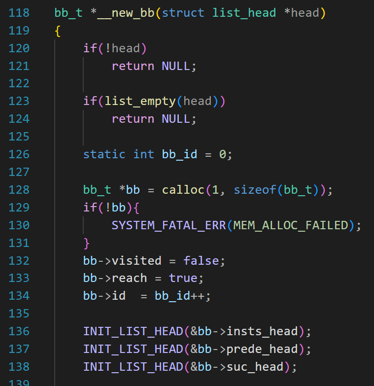
第 128 行，为基本块分配内存；
第 132 行， visited 的默认值是 false；
第 133 行， reach 字段表示这个基本块是否可达，默认是 true
非常重要的是 136~138，链表的头节点一定要初始化，初始化了才能得到一个空链表。
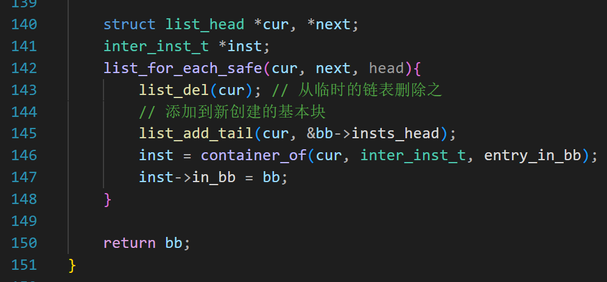
第 142 行，安全遍历临时链表，因为有删除的操作，所以一定要用安全遍历。
第 144，从临时链表把一个指令拿下来
第 145 行，把拿下来的指令加入到基本块的 insts_head 链表中。
第 146 行，得到这条指令的地址；第 147 行，填写指令的 in_bb 字段，记录它属于的基本块。
再回到前面创建基本块的代码：
第 109 行， list_add_tail(&bb->entry_in_dfg, &dfg->bbs_head);
这句的意思是把基本块 bb 添加到流图中。
1 | |
目前 dfg_t 这个结构体就一个成员，叫 bbs_head，是链表的头节点。因为流图由若干个基本块组成，为了把基本块组织在一起，我采用了我们经常使用的链表。
当函数生成中间指令后，就可以为这些代码创建流图了，所以，一个函数就有一个 dfg_t 结构体。
前面的 bb_t 里面设计了第 19 行的 entry_in_dfg，假设一个函数的中间指令序列可以划分为 4 个基本块，那么这 4 个基本块都会通过 entry_in_dfg 结构体加入 这个函数的流图。
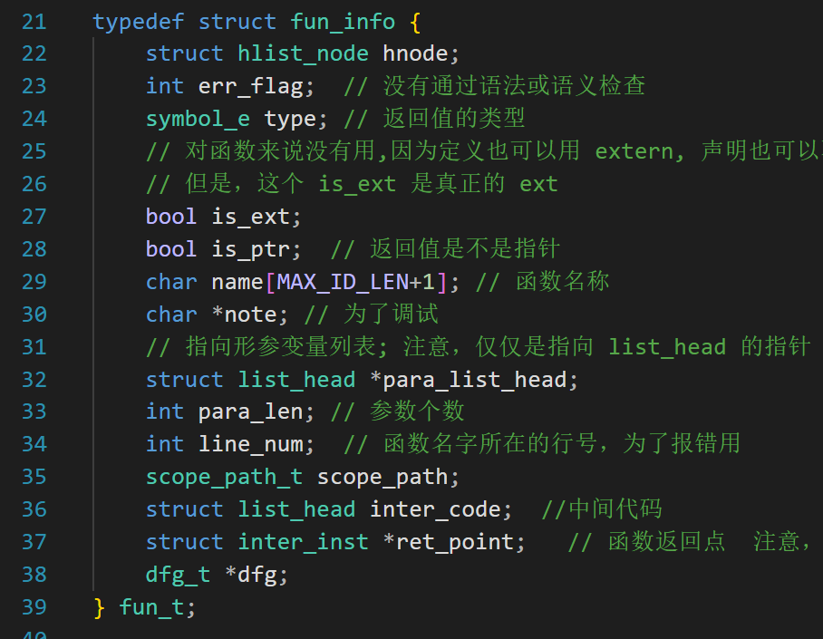
第 38 行，为 fun_t 结构体添加了一个 dfg_t 类型的指针 dfg;
之前我们做符号表管理，创建函数符号会调用 new_fun
1 | |
现在为 new_fun 函数增加第 5 行的代码，调用 new_dfg 来初始化 fun->dfg 指针。
new_dfg 函数的代码从第 8 行开始。
首先第 10 行分配 dfg_t 结构体占用的内存，第 14 行初始化链表的头节点 dfg->bbs_head；
在调用 create_bbs 函数的时候，第二个参数就是函数的 dfg 指针，有了这个指针，就可以把创建好的基本块加入 dfg->bbs_head；
仅仅把创建好的基本块都加入流图还不够，因为流图不仅包括节点（基本块），还包括边。
如何描述一条边呢？如果从基本块 A 到基本块 B 有一条边，我们可以说 A 是 B 的前驱，同时 B 是 A 的后继。
回到本文开头的那张流图
基本块 1 没有前驱，有后继 2 和 3；
基本块 2 的前驱是 1，后继是 4
基本块 3 的前驱是 1，后继是 4
基本块 4 的前驱是 2 和 3，没有后继。
所以，可以用前驱和后继来描述边。
另外，每个基本块，都可能有前驱或者后继，也可能没有，如果有，也可能不止一个。
所以，我用两个链表来表示一个基本块的前驱和后继。
再回到基本块结构体的定义
第 23 行，定义了此基本块的前驱链表的头节点，链表为空，说明没有前驱。如果有前驱，就利用前面我们用过很多次的 gp_node_add_tail 函数，把前驱块的地址加入链表；需要注意，如果有多个前驱，仅仅是用链表把它们的地址管理起来，前驱之间并没有先后关系。
同理，后继也如此。
添加边
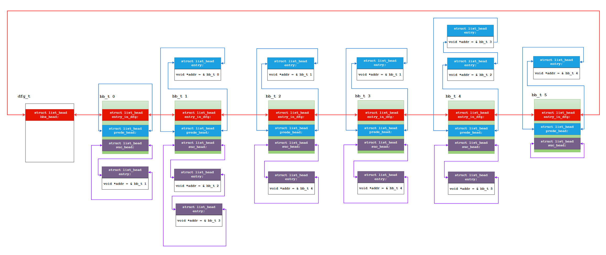
在讲代码之前，我们先看这幅图。
首先，看红色的节点和箭头，它们构成了一个链表，代表流图的所有基本块。
然后，每个基本块，除了红色节点外，还有一个蓝色节点（前驱链表的头节点）和一个紫色节点（后继链表的头节点）。
把其中一部分放大
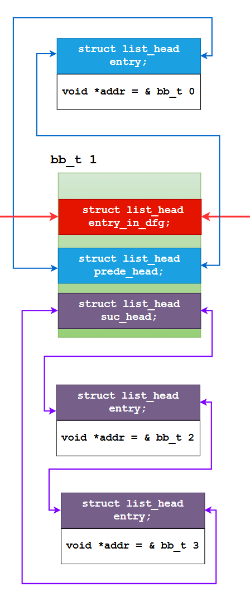
这是基本块 1，它有一个前驱是基本块 0（蓝色箭头构成的链表），它有 2 个后继分别是基本块 2 和 3（紫色箭头构成的链表）。
看完图，再看代码会更高效。
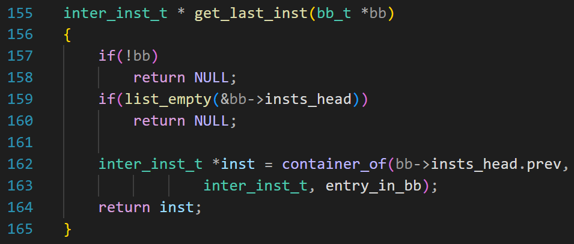
这个函数用于获得基本块的最后一条指令，因为我们要知道基本块最后一条指令是不是跳转。
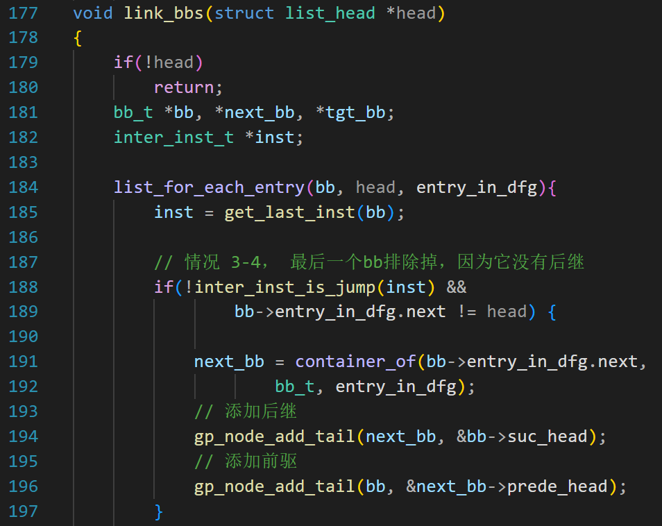
link_bbs 函数用来为已经加入流图的基本块添加边。bbs 是 basic blocks 的意思。
前文已经介绍过，有四种边：
条件跳转边
无条件跳转边
顺序执行边
fall-through 边, 当情况1为假
第 184 行，遍历基本块，第 185 行，取出基本块的最后一条指令。如果这个指令不是无条件跳转，那它执行完后就可能（说可能是因为它是一个条件跳转）继续执行它后面的指令，所以此基本块要和它的下一个基本块建立边；另外，这个基本块不能是最后一个基本块（第 189 行判断），因为最后一个基本块没有后继；
第 191 行，得到下一个基本块的地址，第 194 行，让下一个块称为当前块的后继；
第 196 行，让当前块成为下一个块的前驱。
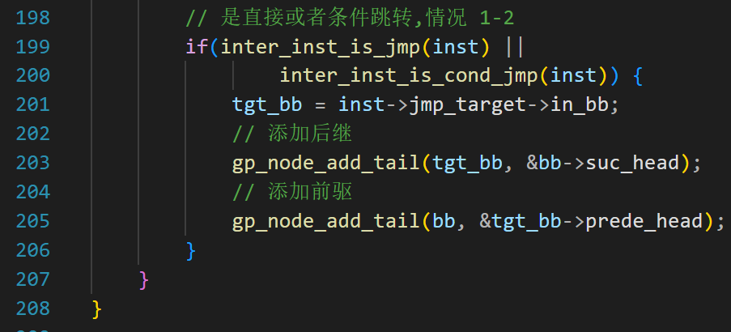
我们继续看代码，前面处理了情况 3、4，现在处理情况1、2
如果是跳转或者条件跳转，我们就找到跳转指令的目标指令，这个好办，inst->jmp_target 字段保存了目标指令的地址
不过建立边需要用目标块的地址，如何得到目标块的地址呢？这时候 in_bb 字段就用上了。第 201 得到目标块的地址。
203~205 用来登记 bb 和 tgt_bb 的前驱后继关系，不再赘述。
创建函数的流图
当完成了标记首指令、划分基本块、添加边的函数后，就可以创建一个函数的流图了。
代码如下：
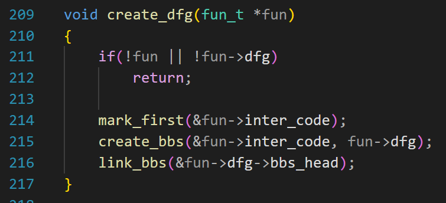
很简单，把这三个步骤连起来。
基本块的可达与不可达
在控制流图中，对于某个基本块 ,如果从入口基本块存在一条路径能够到达该基本块 ,则该基本块是可达基本块，反之则为不可达基本块。
如何判断一个基本块是否可达呢？
如果一个基本块的前驱可达，那么它就是可达的。那如何判断它的前驱是否可达呢？就判断它的前驱的前驱是否可达。所以，这是一个可以通过递归求解的问题。
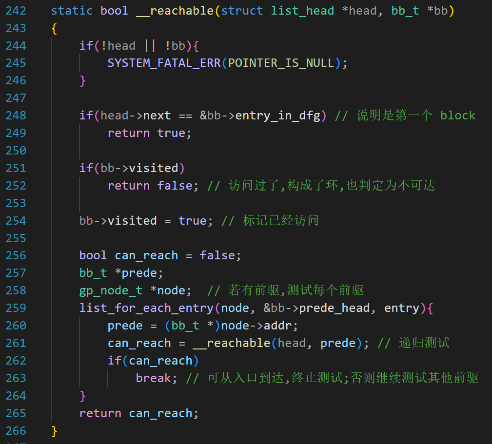
这个函数用来判断某个基本块是否可达。第一个参数是基本块构成的链表的头节点的地址，也就是 dfg_t 结构的 bbs_head 成员的地址。
第二个参数是要判断的基本块的地址。
第 248 行，如果这个基本块是链表中第一个基本块，说明它是 ENTRY 节点，ENTRY 节点一定可达，返回真。
第 251 行，如果某个基本块测试过了，那么当再次测试这个节点的时候，说明流图里面形成了一个不可达的环路，所以返回假。
第 254 行，标记已经访问。
第 259 行，遍历此基本块的前驱，对于前驱，递归调用此函数，如果任何一个前驱可达，此基本块就可达，返回真。若每个前驱都不可达，返回假。
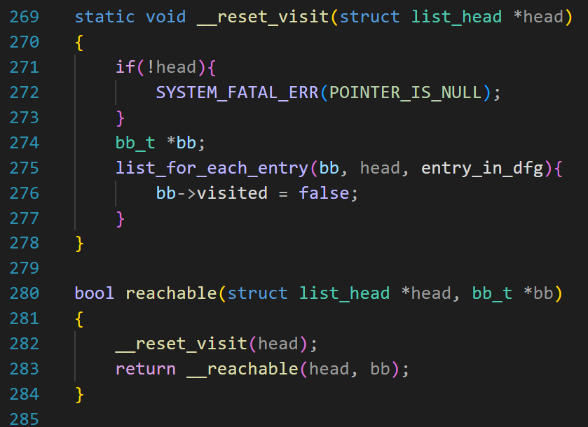
需要说明的是，在调用 __reachable 之前，要把流图中所有基本块的访问标记都置为 false；
也就是第 269 行，先调用这个函数，再调用 __reachable；
把这2个函数封装在一起，就是第 280 行的 reachable 函数。
删除边
接下来要介绍 kill_link 函数，此函数用于删除某条边。
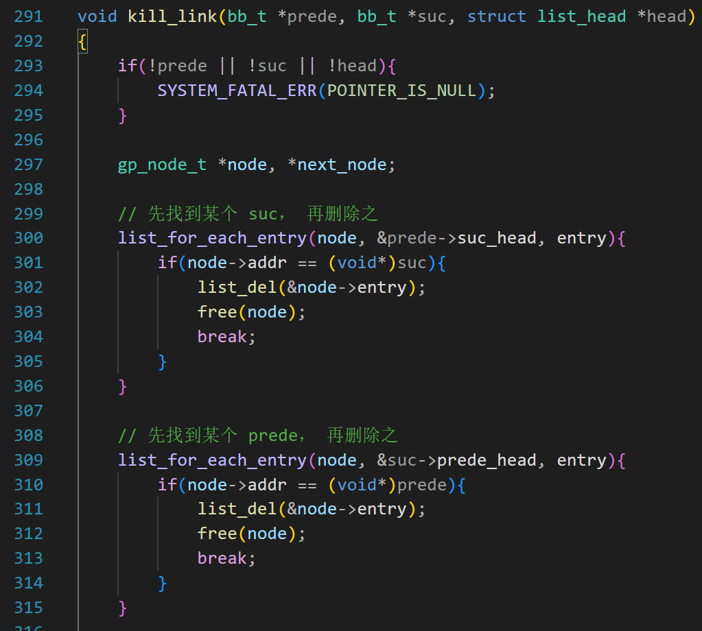
第一个参数是作为前驱的基本块，第二个参数是作为后继的基本块，第三个参数是构成基本块的链表的头节点，也就是 dfg_t 结构的 bbs_head 成员的地址。
举例来说，基本块 A 到 B 有一条边，如果用这个函数来删除，第一个参数就传 A 的地址，第二个参数就传 B 的地址。
第 300 行，从 A 的后继链表里面找 B 的地址，找到后删除。
同理，在 B 的前驱链表里面找 A 的地址，找到后删除。
这就完了吗？没有完。
因为把 A 到 B 的边删除了，那么对 B 是否可达就要重新评估。此时调用 reachable 函数测试 B 是否可达，如果不可达，那么从 B 发出的边也就没有意义了，所以要把这些边都删除，怎么删呢，第 332 行递归，把 B 发出的边删了，这里面会评估 B 的所有后继的可达性，如果某个后继不可达，继续删…
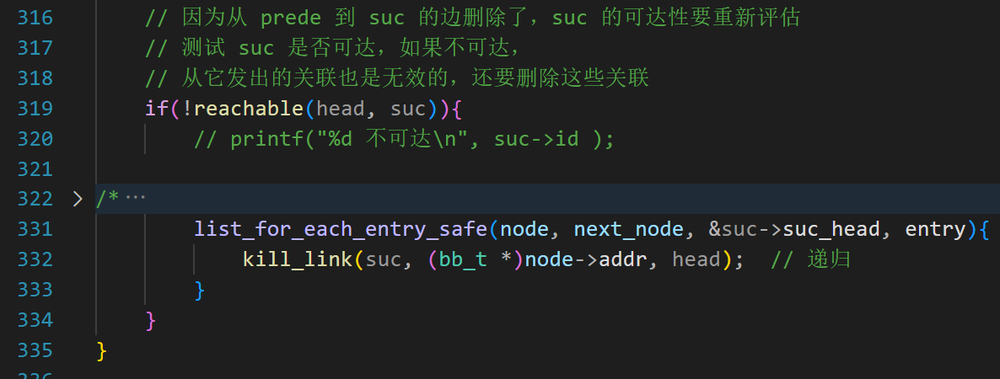
直到该删的都删了。
删除一条边的函数有了，如何删除和一个基本块关联的所有边呢？
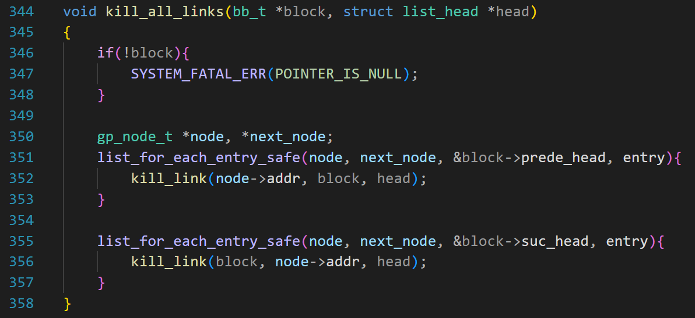
第 351 行，安全遍历这个基本块的所有前驱，删除从前驱到它的边；
第 355 行，安全遍历这个基本块的所有后继，删除从它到后继的边；
移除不可达的基本块
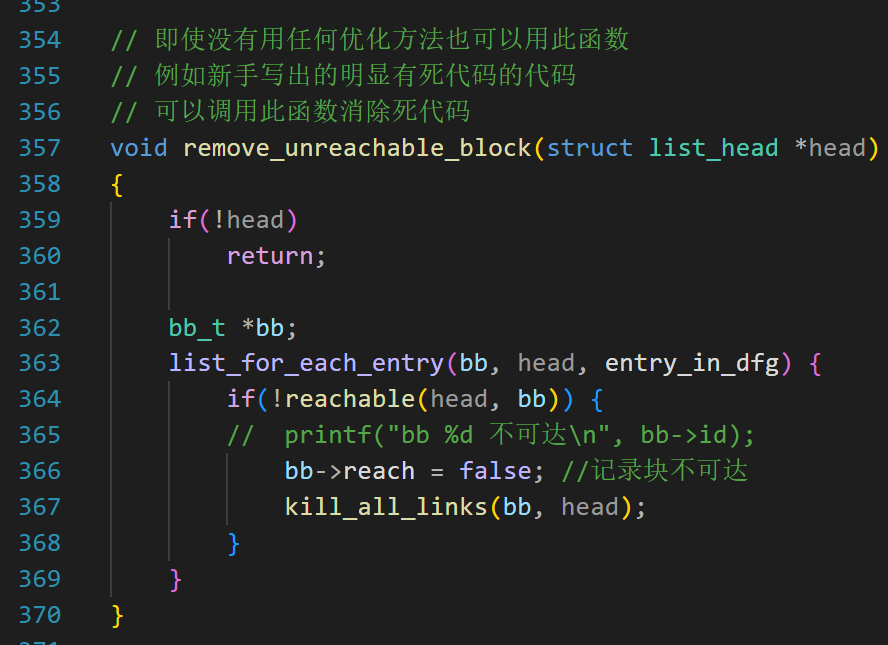
此函数用来清理流图中不可达的基本块。
第 363，遍历流图中的每个基本块，第 364，测试每一个基本块的可达性。如果不可达，标记 reach 字段为 false;
第 367，调用 kill_all_links 删除和它关联的所有边。
三类链表
最后，画一张图为读者讲清楚构成中间指令的链表，构成基本块的链表，构成流图的链表。
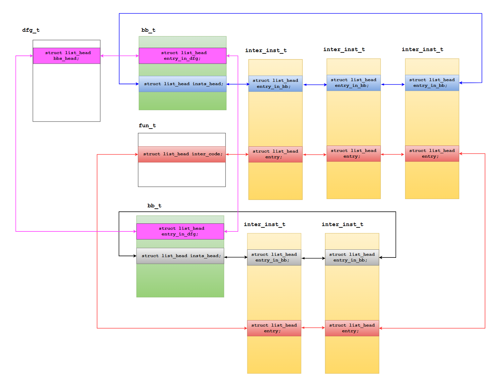
这张图一共有 4 个链表。
1、请看红色节点和红色箭头，函数的中间指令构成链表，头节点是 fun_t 中的 inter_code，用户节点是 inter_inst_t
2、假设中间指令可以划分为 2 个基本块，每个基本块和属于它的指令构成链表，蓝色节点和蓝色箭头构成一个链表，黑色箭头和灰色节点构成一个链表,头节点是 bb_t 中的 insts_head，用户节点是 inter_inst_t
3、这 2 个基本块要加入函数的流图，所以粉色节点和粉色箭头构成链表，头节点是 dfg_t 中的 bbs_head，用户节点是 bb_t
成果展示
首先，我们写一段测试代码。
1 | |
这段代码生成的中间指令序列如下：
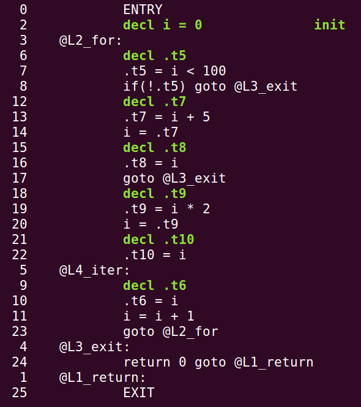
现在调用 create_dfg 函数，为其生成流图。
生成的流图如何展示呢？可以以文本的形式打印出来。
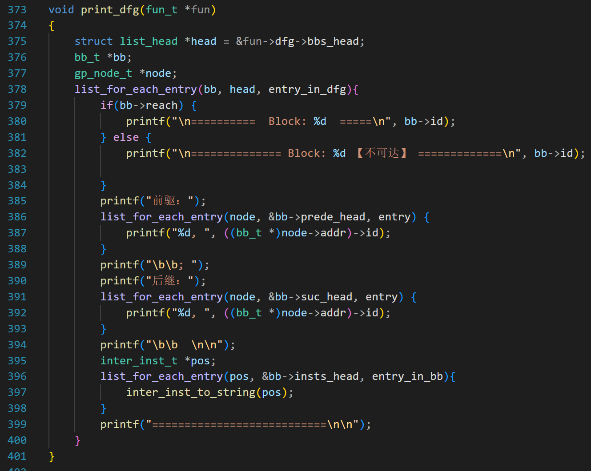
第 378 行，遍历每个基本块。
第 379~384，输出每个块的编号，如果块不可达，还要输出【不可达】作为提示。
第 386~388，遍历这个块的前驱链表，输出前驱的块编号。
第 391~393，遍历这个块的后继链表，输出前驱的块编号。
第 396~398，输出基本块的指令。
运行结果是这样的（仅截图一部分）
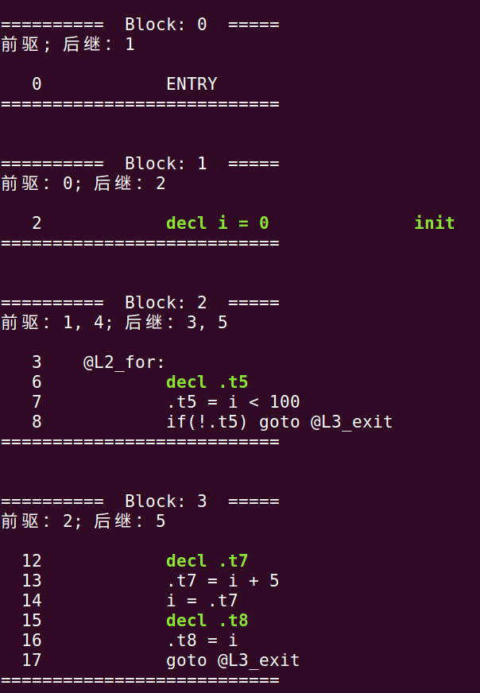
这种纯文本的形式有个缺点，就是基本块之间前驱和后继的关系不直观。想要直观的图可能要自己动手绘制，例如本文开头的流图是我手动绘制的，比较麻烦。有没有解决方法呢？有的！
我们可以输出 dot 文本，再利用现成的工具把 dot 语言转换成图片。
Dot 语言是一种用于描述图形的文本语言，是开源工具包 Graphviz 的一部分。它允许用户通过简单的文本文件来定义节点、边和它们之间的关系，从而生成流程图、组织结构图、网络图等可视化图形。
关于 Dot 的语法这里就不展开了。利用 print_dfg_dot 函数（此函数需要自己写，代码就不贴了），输出的 dot 文本如下：
1 | |
把这段文本复制到某个可以在线生成 Graphviz DOT 图的网站， 例如
https://dreampuf.github.io/GraphvizOnline/
就能看到：
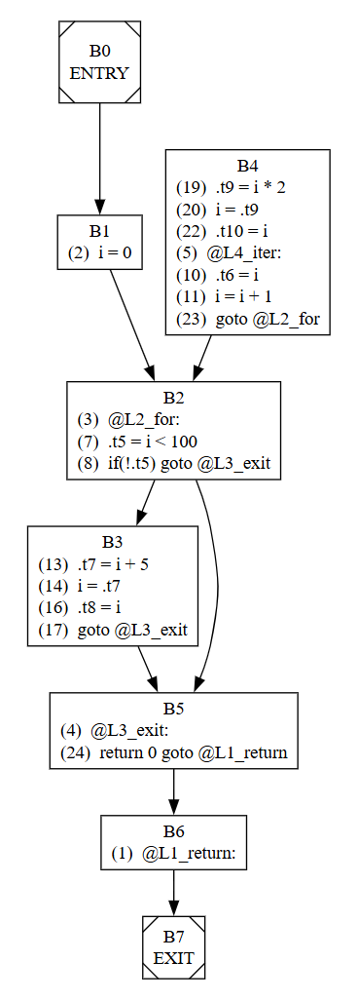
因为测试代码第 6 行有个 break，导致图中的 B3 最后一条指令（17）为无条件跳转到 B5，所以 B4 没有前驱，这在图上很明显。
现在可以调用函数 remove_unreachable_block 来标记不可达的基本块，并清理掉多余的边。
之后，再次调用 print_dfg_dot 函数生成 dot
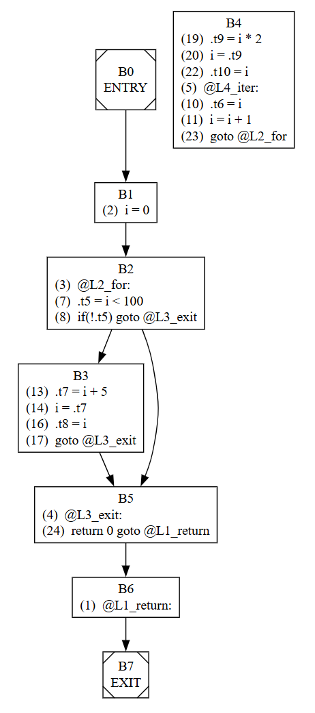
此时可以看到 B4 已经从流图中移除了，成了孤立的存在。
本文内容到这里就结束了。下节课我们学习具体的和机器无关的代码优化方法，例如简单常量传播。
配套代码下载地址：https://gitee.com/chezi2020/csub/
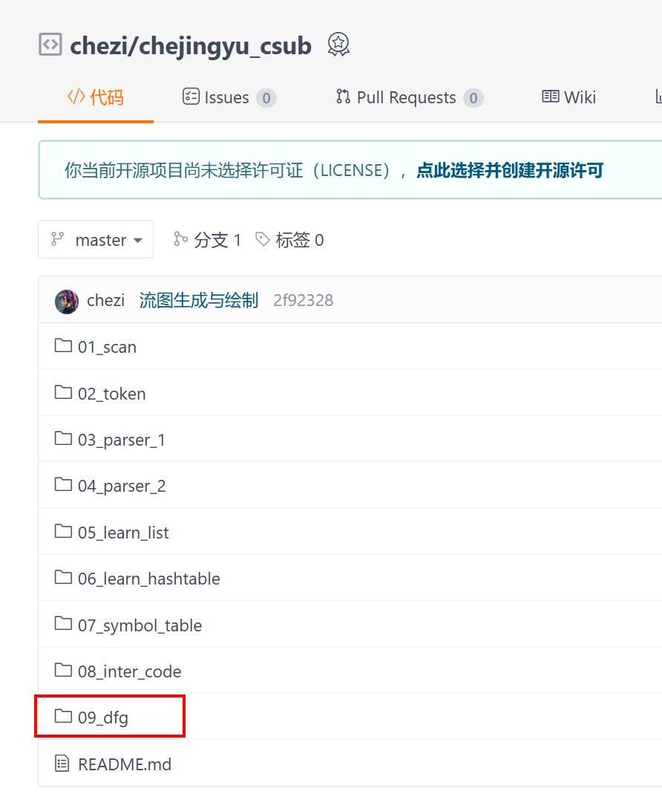